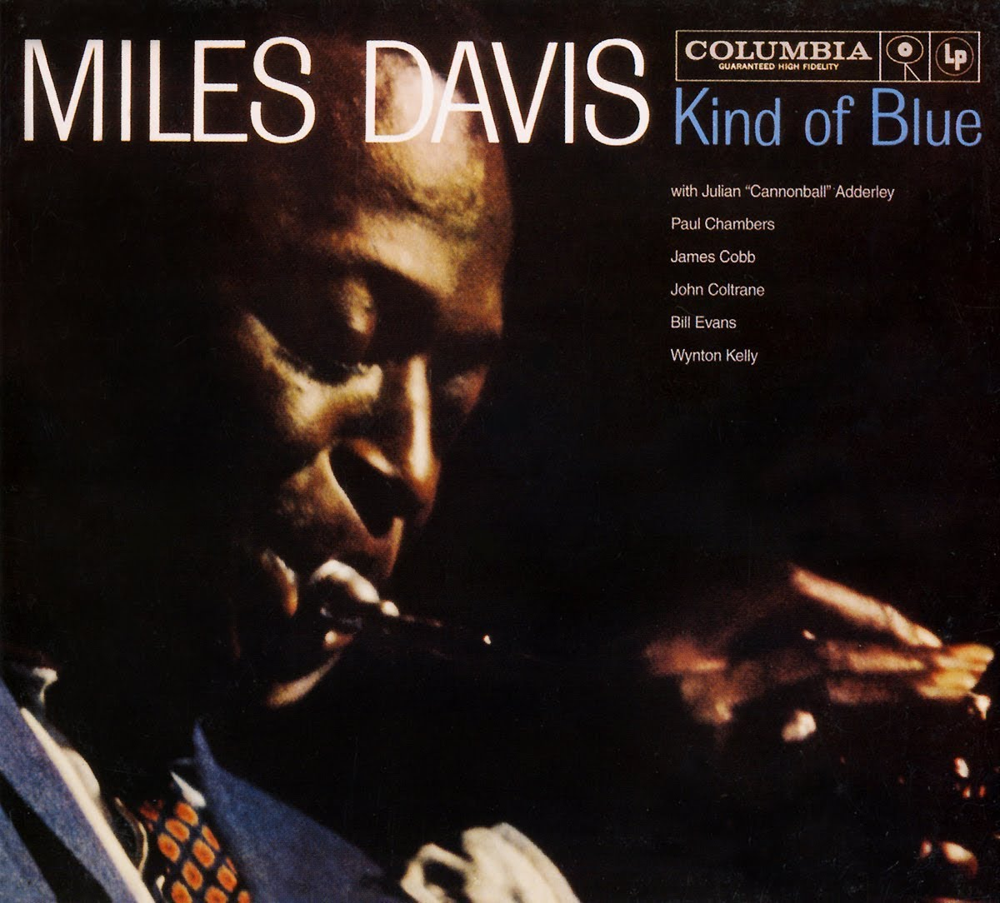
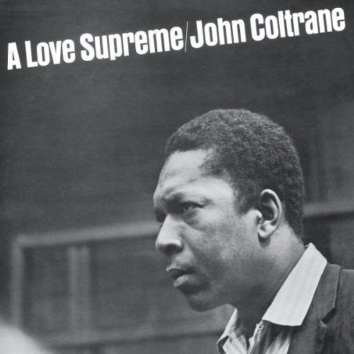
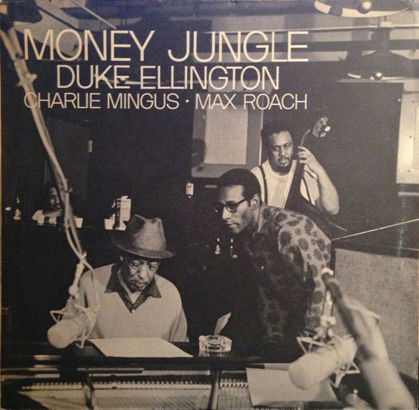
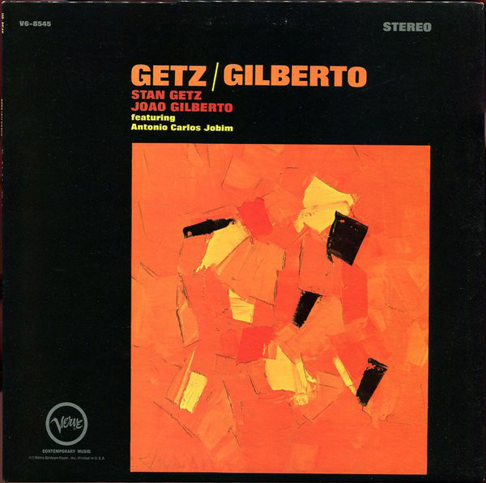
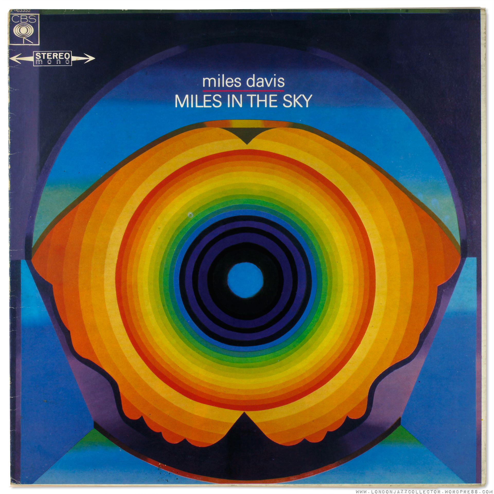
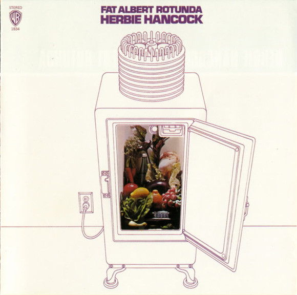
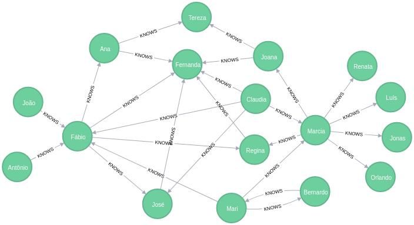
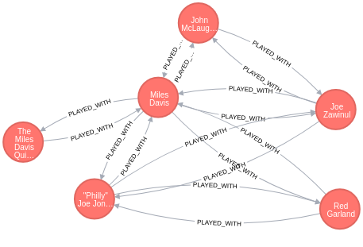
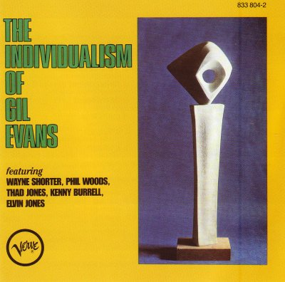

PythonBrasil[13]
Navegando por grafos com Python
Bernardo Fontes
Belo Horizonte/BH
08 de Outubro de 2017
PythonBrasil[13]
Grafos e uma Análise Matemática do Jazz nos anos 60
Bernardo Fontes
Belo Horizonte/BH
08 de Outubro de 2017
## Gracias, [Nicolle](https://twitter.com/nicysneiros)!
[Graph Databases: Discutindo o Relacionamento dos seus Dados com Python](https://speakerdeck.com/labcodes/graph-databases-discutindo-o-relacionamento-dos-seus-dados-com-python)
## Anos 60 nos EUA
### O Fim da Inocência
Desenvolvimento do Jazz Modal
Miles Davis - Kind of Blue (1959)

Desenvolvimento do Jazz Modal
John Coltrane - A Love Supreme (1965)

Estruturas Enxutas
Duke Ellington, Charles Mingus e Max Roach - Money Jungle (1962)

Brasil, irmão
Stan Getz & João Gilberto - Getz/Gilberto (1964)

Influências externas
Miles Davis - Miles In The Sky (1968)

Jazz Fusion
Herbie Hancock - Fat Albert Rotunda (1969)

## Mas, e aí?
- Esses são só uns nomes... E todo o **resto** da galera?
- Quem **tocou** com mais quem?
- **Teoria dos Grafos** é uma bom caminho para a resposta!
## Sobre Grafos
- Estrutura composta por **nós e arestas**
- **Nós** possuem dados
- **Arestas** definem relações entre os nós
Exemplo
Grupo de amigos

## Por que grafos?
- Problemas em que **relação é tão importante** quanto os dados em si
- Análise de **padrões de relação**
- Detecção de **grandes grupos** (clusters)
- Estudos de **centralidade**
## Nosso Grafo
- Somente discos lançados **nos EUA nos anos 60**
- **Músicos** e **Álbuns** como nós
- Relação entre **músicos que tocaram juntos**
- Relação entre **músicos e álbuns que participaram**
Resultado (PLAYED_WITH)

## Três perguntas
- Quem **participou de mais discos**?
- Quem são os **músicos mais influentes** na rede?
- Quais são os **discos mais influentes** na rede?
## jazz_musicians_graph.json
```python
{
'nodes': {
"2808823": {
"name": "Johnny Allen", "roles": ["Bass"], "type": "MUSICIAN"
},
"325859": {
"name": "Danny Barcelona", "roles": ["Drums"], "type": "MUSICIAN"
},
"3942191-Cugat's Golden Goodies": {
"year": 1963, "type": "RELEASE", "title": "Cugat's Golden Goodies"
},
"5004667-The Shearing Touch": {
"year": 1960, "type": "RELEASE", "title": "The Shearing Touch"
},
...
},
'links': [
["2808823", "325859", {'type': 'PLAYED_WITH', 'release_id': "5004667-The Shearing Touch", 'roles': ['Bass']},
["2808823", "5004667-The Shearing Touch", {'type': 'RECORDED', 'roles': ['Bass']},
...
]
}
```
### Montando o grafo completo
```
import networkx as nx
master_graph = nx.MultiDiGraph()
with open(GRAPH_JSON_FILE) as fd:
graph_data = json.load(fd)
master_graph.add_nodes_from(graph_data['nodes'].items())
master_graph.add_edges_from(graph_data['edges'])
print(master_graph.number_of_node())
print(master_graph.number_of_edges())
```
### Grafo `RECORDED`
```
def extract_recorded_graph(master_graph):
graph = nx.Graph()
graph.add_nodes_from(master_graph.nodes())
flatten = flatten_edges(master_graph)
for source, target, rel_data in flatten:
if rel_data['type'] != 'RECORDED':
continue
graph.add_edge(source, target, **rel_data)
return graph
recorded_graph = extract_recorded_graph(master_graph):)
```
### Grafo `PLAYED_WITH`
```
def extract_played_with_graph(master_graph):
graph = nx.Graph()
for n, data in master_graph.nodes(data=True):
if data['type'] == 'MUSICIAN':
graph.add_node(n, **data)
flatten = flatten_edges(master_graph)
for source, target, data in flatten:
if not data['type'] == 'PLAYED_WITH':
continue
if not graph.has_edge(source, target):
graph.add_edge(source, target, weight=0, **data)
graph.edges[(source, target)]['weight'] += 1
return graph
played_with_graph = extract_played_with_graph(graph)
```
## Centralidade
- Medida de **importância** de um nó em um grafo
- **de Grau**: baseada no número de ligações de um nó
- **de Contribuição**: baseada na contribuição topológica de um nó em um grafo
## Três Respostas
- Quem participou de mais discos?
- **Centralidade de grau no grafo RECORDED**
- Quem são os músicos mais influentes na rede?
- **Centralidade de contribuição no grafo PLAYED_WITH**
- Quais são os discos mais influentes na rede?
- **Centralidade de contribuição no grafo RECORDED**
### Métricas
```
def top_10_recorders(recorded_graph, master_graph):
centralities = nx.degree_centrality(recorded_graph)
is_musician = lambda n: master_graph.node[n]['type'] == 'MUSICIAN'
sorted_centralities = sorted(
centralities, key=centralities.get, reverse=True
)
sorted_nodes = [n for n in sorted_centralities if is_musician(n)]
return sorted_nodes[:10], centralities
def top_10_musicians_influence(played_with_graph, master_graph):
centralities = nx.eigenvector_centrality(played_with_graph, weight='weight')
sorted_centralities = sorted(
centralities, key=centralities.get, reverse=True
)
return sorted_centralities[:10], centralities
def top_10_albuns(recorded_graph, master_graph):
centralities = nx.eigenvector_centrality(recorded_graph)
is_album = lambda n: master_graph.node[n]['type'] == 'RELEASE'
sorted_centralities = sorted(
centralities, key=centralities.get, reverse=True
)
sorted_nodes = [n for n in sorted_centralities if is_album(n)]
return sorted_nodes[:10], centralities
```
### Top 10 Recorders
```
1) Ron Carter - Baixo
2) George Duvivier - Baixo
3) Richard Davis (2) - Baixo
4) Clark Terry - Trompete
5) Grady Tate - Percurssão
6) Kenny Burrell - Guitarra
7) Bob Cranshaw - Baixop
8) Jerome Richardson - Sax
9) Paul Chambers (3) - Baixo
10) Herbie Hancock - Piano
```
### Top 10 Prolific Musicians
```
1) Ernie Royal - Trompete
2) Jerome Richardson - Sax
3) Grady Tate - Percursão
4) Jimmy Cleveland - Trombone
5) George Duvivier - Baixo
6) Clark Terry - Trompete
7) Urbie Green - Trombone
8) Joe Newman - Tropmete
9) Richard Davis (2) - Baixo
10) Jim Buffington - Trompete
```
## O que dá mais pra fazer?
- Base de dados mais completa: allmusic.com
- Como chegar de um músico a outro?
- Quais são os núcleos?
- Estudar outros estilos
Um indicação
9) Gil Evans - The Individualism of Gil Evans (1964)
